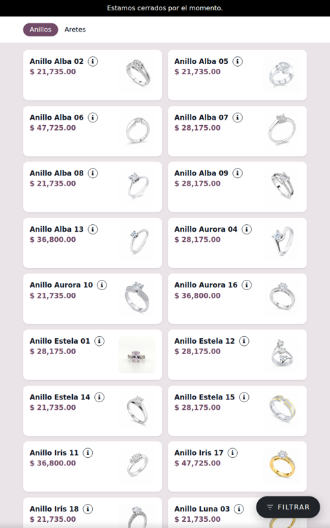
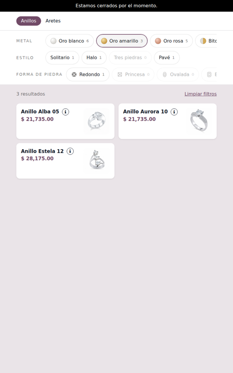
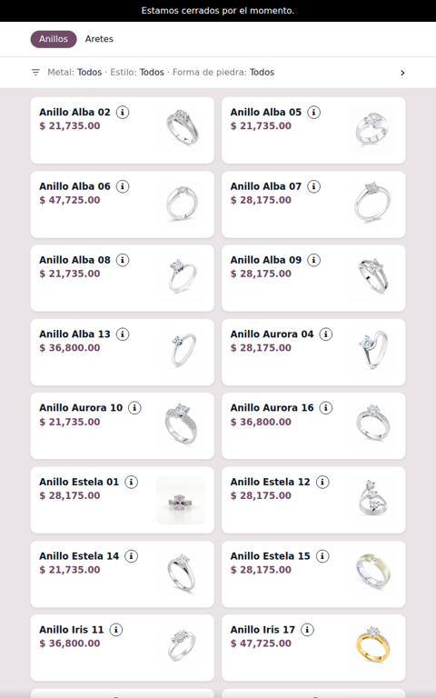
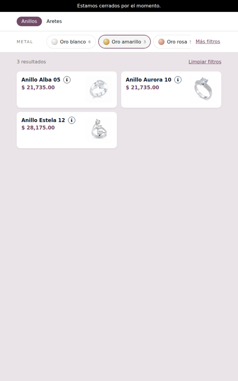
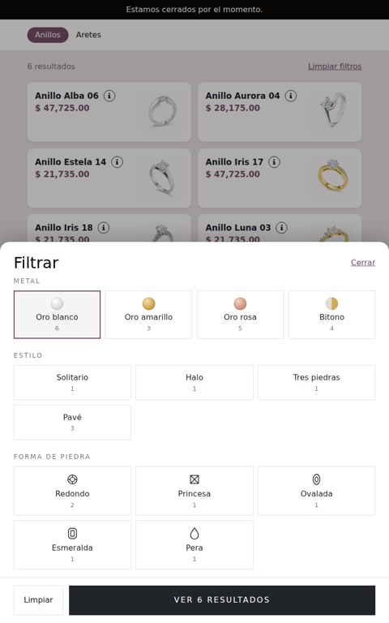
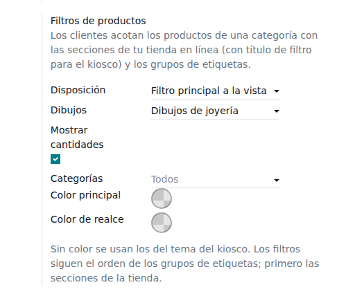

No new catalog to maintain. The filters come from your website sections (give a website category a kiosk filter title, e.g. "Metal", and its subcategories become a filter) and your tag filter groups (Style, Stone shape, Size…).
Each option says how many products it leaves and options that would leave none are greyed out. Options of the same filter add up, different filters combine — like the online shop.
Filters start over when the customer changes category or the kiosk goes back to its home screen, and they stay while a product is opened. Filters only appear in categories that have something to filter.

Floating button: the most discreet. A small Filter button opens a panel.

Always-visible bar: every filter in view, one tap away.

Text line: what is chosen, in one line under the categories.

Main filter in view: e.g. the metal always in view, the rest under More filters.

Point of Sale › Settings › your kiosk › Mobile self-order & Kiosk › Product filters: layout, drawings, counts, categories and colors.
Website › Configuration › eCommerce Categories: set a Kiosk filter title on the category whose subcategories should be a filter. Website › Configuration › Tag Filter Groups: group your tags and set their order.

Odoo 19 Community or Enterprise · Point of Sale with the self-order kiosk · eCommerce · eCommerce Tag Filter Groups (XUBAX, included in the price).
Questions or a change you need? Write to soporte@xubax.com — XUBAX.